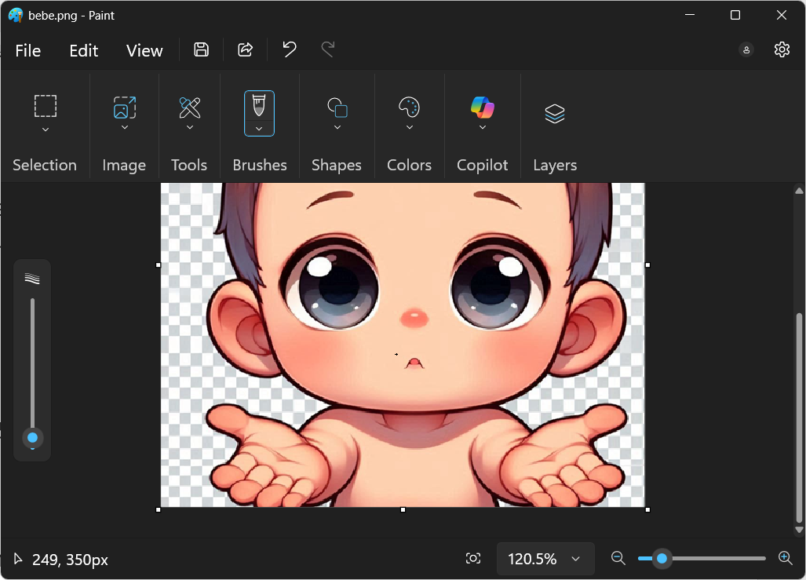
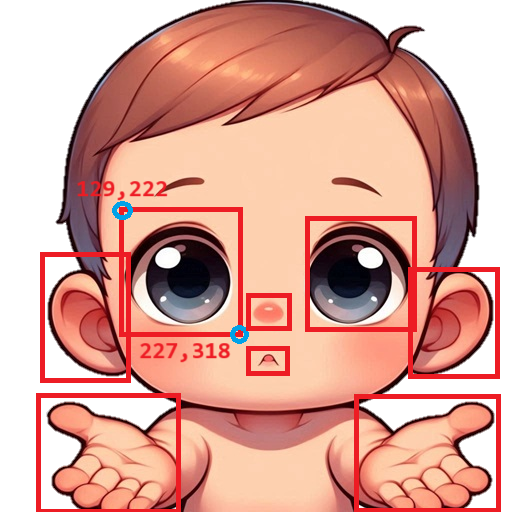

Ejercicio de Mapa de Imágenes
Instrucciones
A continuación encontrarás las instrucciones necesarias para que desarrolles un sitio web como el que se te muestra a continuación: Los cinco sentidos.
Una vez terminado tu ejercicio, crea un repositorio en Github, conviértelo en página y sube el proyecto.
Archivos necesarios
Texto de la página
para copiar...
Los sentidos
Al nacer, los seres humanos venimos al mundo con cinco sentidos que están relacionados con diferentes órganos del cuerpo y que nos permiten estar en contacto con el exterior. Los órganos son: ojos, naríz, boca, oreja y piel.
Clica sobre estos órganos en el bebé para que conozcas cuáles son éstos cinco sentidos (en el caso de la piel, clica sobre sus manos!)
Bebé
La vista
La vista sirve para captar los estímulos visuales. La luz entra en los ojos y se refleja en la retina, que contiene células receptivas que nos permiten ver. Para que nuestra vista funcione, la luz que captan nuestros ojos debe ser convertida en información utilizable por el cerebro. Esto nos permite diferenciar la luminosidad, el color y la distancia.
El oido
La audición es la percepción de los sonidos y del volumen mediante los oídos. En realidad, son las células ciliadas del oído las que nos permiten oír. Las vibraciones del sonido mueven los pelos de diferentes maneras, por lo que podemos distinguir los sonidos. Los oídos también son vitales para nuestro sentido del equilibrio.
El olfato
El olfato es la percepción de los humos y los olores a través de la nariz. Cuando tomamos aire por la nariz, éste pasa por las células olfativas. El cerebro reconoce, entonces, diferentes sustancias químicas en el aire y reconoce diferentes olores.
El gusto
El gusto es la percepción de los sabores mediante la boca. La razón por la que somos capaces de percibir el sabor a través de la lengua se debe a nuestras papilas gustativas. Las papilas gustativas se encuentran dentro de las papilas, que son las pequeñas protuberancias de la parte superior de la lengua que ayudan a agarrar los alimentos mientras se mastican los dientes.
El tacto
El tacto es la percepción de objetos físicos y texturas a través de la piel. Nuestra piel capta diferentes presiones, texturas y vibraciones y nos ayuda a averiguar qué es lo que estamos tocando. La piel es el mayor órgano sensorial de nuestro cuerpo y sus tres funciones principales son la protección, la sensación y la regulación. La piel contiene un montón de receptores sensoriales que nos permiten percibir la temperatura de la superficie, el dolor, el tacto físico y los estímulos químicos.
¿Cómo hacer un mapa de imágenes?
Las coordenadas se conocen abriendo la imagen desde un programa como Paint. Ejemplo:

Desde Paint, las coordenadas por donde pasa el cursor se muestran en la esquina inferior izquierda (249, 350px). Hay que copiar estas coordenadas para crear un mapa de coordenadas. Éste mapa se crea con la etiqueta <map> y se le da un nombre con el atributo name.
En la imagen, se indica el nombre del mapa precedido por una almohadilla, con el atributo usemap como en el ejemplo:
<p><img src="./img/bebe.png" alt="Bebé" usemap="#sentidos"></p>
<map name="sentidos">
<area shape="rect" coords="129,222,227,318" href="#vista" title="OJO" alt="vista">
<!-- vista sería un vínculo a un marcador dentro de la misma página -->
<area shape="rect" coords="309,223,413,317" href="#vista" title="OJO" alt="vista">
<area shape="rect" coords="40,226,130,365" href="#oido" title="OREJA" alt="oido">
<area shape="rect" coords="422,266,493,368" href="#oido" title="OREJA" alt="oido">
<area shape="rect" coords="249,299,291,323" href="#olfato" title="NARIZ" alt="olfato">
<area shape="rect" coords="249,350,287,373" href="#gusto" title="BOCA" alt="gusto">
<area shape="rect" coords="42,400,181,508" href="#tacto" title="PIEL (mano)" alt="tacto">
<area shape="rect" coords="359,412,497,508" href="#tacto" title="PIEL (mano)" alt="tacto">
</map>
Las coordenadas del mapa se intepretarían de la siguinete manera

¡ Intenta hacer tú solito/a otra página con mapa de imágenes luego de hacer el ejercicio !
{kind=link}